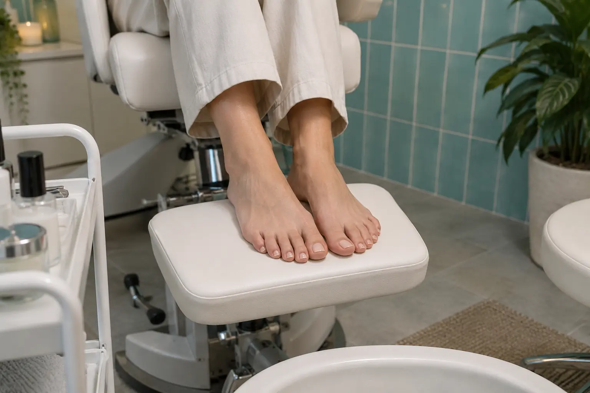

Pedikiūro gidas: pėdų priežiūra, nagų sutvarkymas ir lakavimas
Autorius: Madbeauty redakcija · Numatyta 2026 m. lapkričio 10 d. 16:00 (Lietuvos laiku)
Sužinokite, kokie darbai gali įeiti į pedikiūrą, kuo skiriasi vizitas be dangos ir su ja, ką palyginti renkantis paslaugą.

Pedikiūras gali apimti pėdų odos priežiūrą, nagų sutvarkymą ir nagų dangą, tačiau šie darbai ne visada įtraukti į vieną paslaugą. Rinkdamiesi pirmiausia nuspręskite, ko reikia: odos priežiūros, nagų formos sutvarkymo, spalvos ar kelių darbų derinio. Tada patikrinkite, kas konkrečiai įeina į pasiūlymą.
Trys darbų komponentai
Paslaugų meniu pavadinimas ne visada parodo visą vizito apimtį. Palyginkite pasiūlymus pagal šiuos tris komponentus:
- Pėdų odos priežiūra. Išsiaiškinkite, ar pasiūlyme numatyti darbai su pėdų oda, ar jis skirtas tik nagams. Konkreti eiga ir naudojamos priemonės priklauso nuo teikėjo paslaugos aprašo.
- Nagų sutvarkymas. Patikrinkite, ar įtrauktas nagų trumpinimas ir formavimas, ir ar aprašyme minimi papildomi darbai. Vien žodis „pedikiūras“ negarantuoja, kad įeina visi norimi komponentai.
- Danga. Pasirinkite, ar norite likti be dangos, rinktis paprastą laką, ar prašyti kitos dangos. Jei ant nagų jau yra danga, nuėmimas ir naujas padengimas gali būti atskiri darbai.
Tai paslaugos apimties palyginimo schema, o ne standartinis procedūros protokolas: teikėjai tuos pačius darbus gali vadinti skirtingai arba įtraukti į skirtingus paketus.
Be dangos ar su ja
Vizitas be dangos gali tikti, jei pagrindinis tikslas yra nagų sutvarkymas ar pėdų odos kosmetinė priežiūra. Paprastas lakas prideda spalvos, o gelinė danga ir senos dangos nuėmimas gali pakeisti vizito trukmę bei kainą. Lyginkite pasiūlymus pagal tai, ar nurodyta nuėmimo kaina, naujos dangos tipas ir darbų apimtis; vien pavadinimai „higieninis“ ar „pilnas“ neatsako į visus šiuos klausimus.
Kaip konkretų, tik vieno teikėjo kainyno pavyzdį, 2026 m. spalio 9 d. peržiūrėtame salono pedikiūro meniu nurodyta: pedikiūras be lakavimo – 75 min. ir 45 Eur, su paprastu lakavimu – 90 min. ir 50 Eur, o su seno gelio nuėmimu bei nauju lakavimu – iki 120 min. ir 60 Eur. Tai datuotas vieno salono pavyzdys, ne Lietuvos rinkos vidurkis ar Madbeauty pasiūlymas.
Vizito eiga ir sveikatos ribos
Prieš pasirinkdami pasiūlymą, įvardykite norimus darbus ir esamą dangą. Paprašykite patikslinti, ar nuėmimas įskaičiuotas, kokia danga bus naudojama, kiek numatyta laiko ir kokia galutinė kaina. Jei paslaugos aprašymas neaiškus, patikslinkite jį prieš vizitą. Šie klausimai padeda sulyginti pasiūlymus, bet nenustato vienodos pedikiūro atlikimo tvarkos.
- Jei nagas pakitęs ir norisi jį paslėpti danga, pirmiausia įvertinkite, ar tai tinkama kosmetinė paslauga. Amerikos dermatologų akademija pataria nedengti pakitusio nago dirbtine danga ir kreiptis dėl sveikatos įvertinimo; šios gairės nėra Lietuvos teisės ar teikėjų kvalifikacijos šaltinis.
- Kosmetinis pedikiūras nenustato sveikatos būklės. Jei nagų ar pėdų būklė kelia sveikatos klausimų, ieškokite sveikatos specialisto vertinimo, o ne vien kosmetinės procedūros.
Amerikos dermatologų akademijos saugos gairės
Vyriškas pedikiūras: pavadinimas neapibrėžia darbų
„Vyriškas pedikiūras“ dažniausiai nurodo, kam skirtas pasiūlymas, bet vien šis žymuo nepasako, ar įtraukti odos priežiūros darbai, nagų formavimas ar danga. Vertinkite jį pagal tuos pačius tris komponentus ir konkretaus meniu aprašą. Pavyzdžiui, jei norite tik sutvarkyti nagus be lakavimo, ieškokite pasiūlymo, kuriame tokia apimtis aiškiai nurodyta; nespręskite apie kainą ar trukmę iš paslaugos pavadinimo.
Užklausos formuluotės pavyzdys: „Norėčiau nagų sutvarkymo be dangos. Ar į šį pasiūlymą įtrauktas nuėmimas, jei jo reikėtų, ir kokia būtų galutinė trukmė bei kaina?“ Tai tik iliustracinis klausimo pavyzdys, ne realus užsakymas ar veikiančios registracijos pažadas.
Pedikiūras kaip kategorija apibūdina paslaugos sritį, bet ne konkretaus miesto pasiūlą. Jei ieškote teikėjo, pasirinkite konkrečią paslaugą ir miestą tik ten, kur pateikiami tikri, aktualūs vietiniai rezultatai. Vien nacionalinis katalogo pasirinkimas negarantuoja, kad mieste yra teikėjų, laisvų laikų ar veikia rezervacija.
Palyginkite procedūrų aprašus kataloge: Pedikiūras. Konkrečią darbų apimtį, kainą ir prieinamumą tikrinkite prie realaus teikėjo pasiūlymo.
Susiję gidai
Šaltiniai
- Classic Pedicure & Manicure · LT meniu · www.treatwell.lt
- AAD · manikiūro ir pedikiūro sauga · www.aad.org